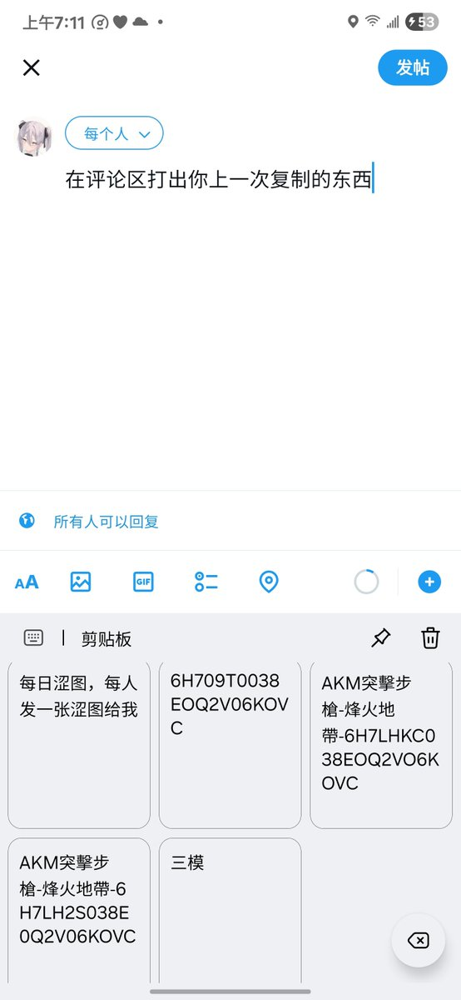

Nayuta
@NayutaZoe
@y2kstarrychan 1.安装紫光驱动
2.使用c6 unlock(.bat)文件解锁Bootloader
先关机，同时按下音量+-和电源键，等两秒插入数据线，运行.bat批文件，之后bl将被解锁，开机时您的数据将会被清除
3.将fdl1 fdl2文件放入spd_dump相同文件夹中
打开spd_dump
分别输入
fdl fdl1.bin 0x5500
fdl fdl2.bin 0x9efffe00
exec

神樂板🌸星璃酱
@y2kstarrychan
在评论区打出你上一次复制的东西 https://t.co/ffynaLcFEP